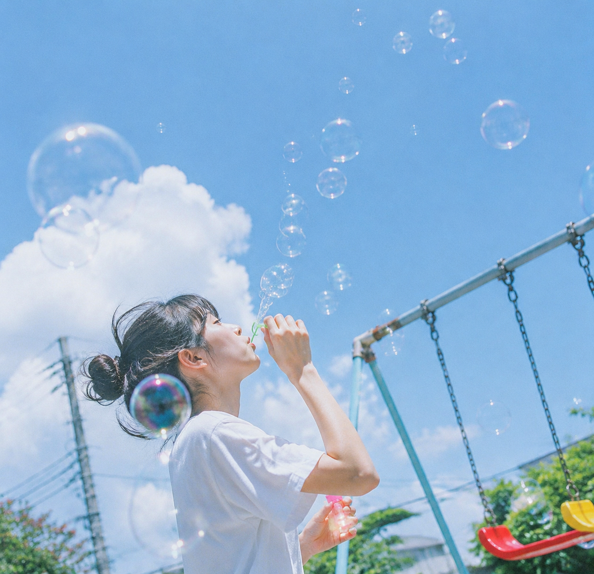
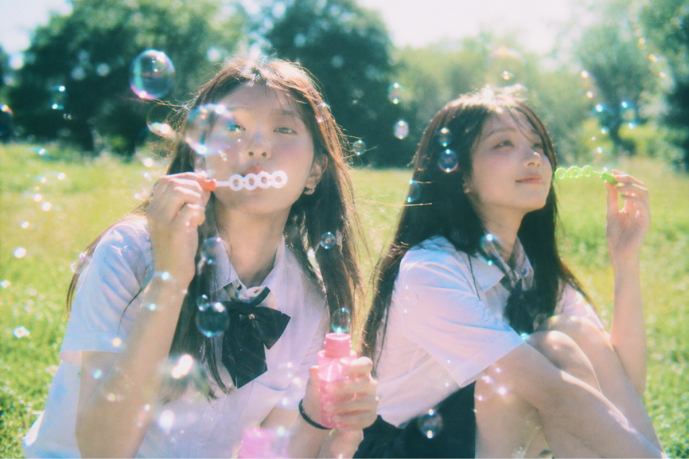
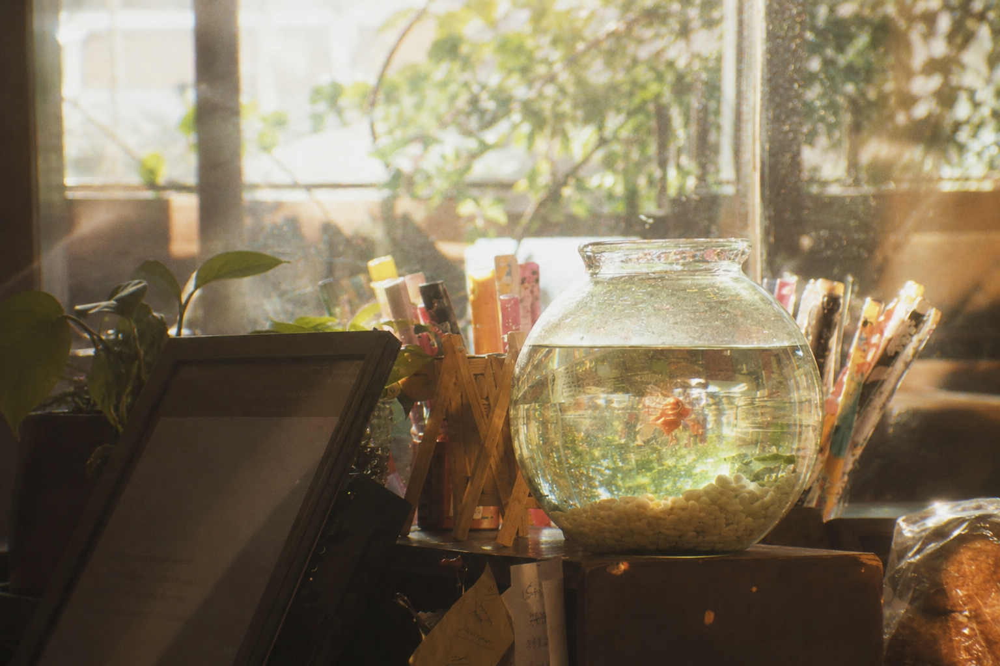
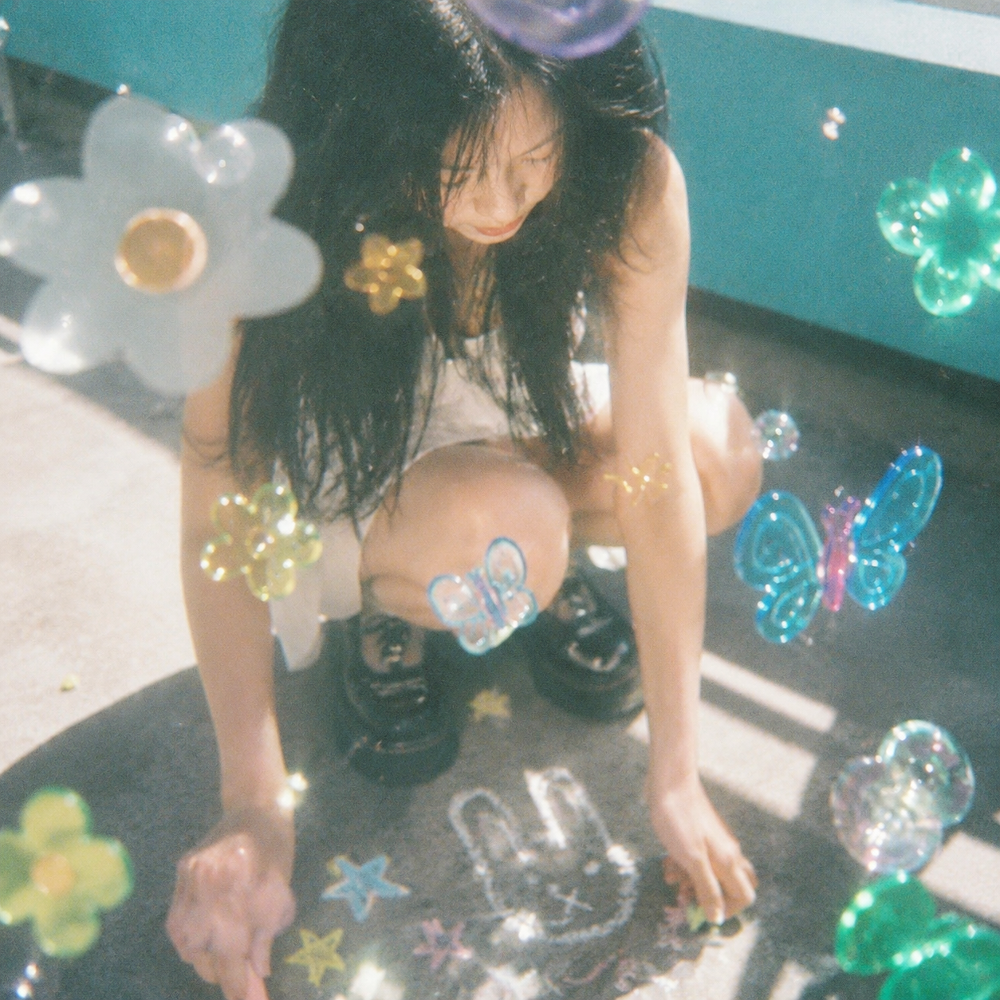

Problem
흩어지는 순간들 사이에서
스쳐가는 순간들 속에서도, 어떤 감정은 오래 남습니다.
라온해는 그런 찰나의 감정들을 아날로그의 온기와 함께 섬세하게 담아내어,
마치 오래된 사진첩과 카세트테이프를 다시 펼쳐보는 순간처럼 언제든 꺼내어
머물 수 있는 청춘의 기록으로 남깁니다.

Solution
오래 간직하고 싶은 웹 경험
라온해는 청춘, 아날로그, 여름방학의 감각을 시각 언어로 풀어내어
브랜드의 서사를 오래도록 머물고 싶은 경험으로 만듭니다. 앨범의 무드,
음악의 선율, 팬들이 기억하고 싶은 장면들을 웹 안에 섬세하게 담아내어
소비되는 페이지가 아닌, 소장하고 싶은 디지털 기록으로 완성합니다.
손에 닿는 듯한 아날로그 순간

Nostalgia
빛바랜 사진을 다시 들여다보는 순간처럼,
오래된 기억의 온기와 감정을 담아냅니다.

Afterglow
여름 저녁 노을이 오래 남듯 지나간 순간의
여운이 천천히 마음에 스며듭니다.

Dreamlike
현실과 기억의 경계 사이를 유영하듯,
몽환적이고 아련한 감각의 장면을 만들어냅니다.
Archive
빛바랜 여름의 선율을 담아
라온해의 아카이브는 감정과 기억을 담아낸 카세트테이프입니다.
데뷔의 설렘, 여름밤의 공기, 첫사랑의 잔상처럼 쉽게 흩어지는 순간들을 아날로그의 온기 속에
천천히 담아냅니다. 재생 버튼을 누르듯, 오래된 기억을 다시 꺼내어 바라볼 수 있도록 말입니다.